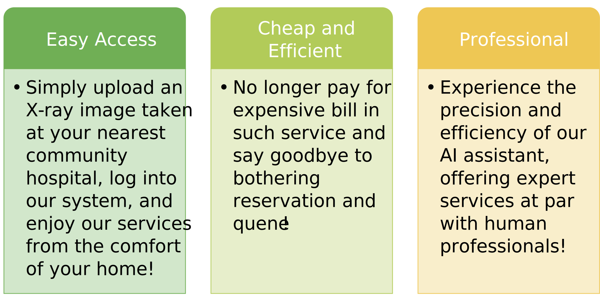

Sercue your children’s flourish.
Detecting kid’s hidden deformity with a platform armed with neural networks (AI tools) for conducting tests.
Bone age —— the key indicator of children's development.
Bone age assessment is like a growth chart for your child's bones, comparing their development to averages.
An X-ray of the hand shows if bones are maturing properly, indicating overall health. It's simple and quick, revealing if growth is too fast or slow, which may signal health issues. Early detection through this test is key to preventing future growth problems or deformities, ensuring children stay on track for healthy development.
What is BUD?
BUD is a online medical system installed with AI tools based on deep learning.
Parents only need to upload a X-ray taken by their communnity hospitals to evaluate their bone age to detect any hidden deformity.
Compared to problematic typical means, it is extremly CHEAP AND EFFIECENT!
Why choose us?
And listen from our previous customers...
Traditional Hospital Check vs. BUD
Our system has many advantages over traditional hospital checks!
| Traditional Hospital Check | BUD |
|---|---|
| Traditional hospital checks can be exorbitantly expensive. | Our platform offers them at an incredibly affordable price. |
| Booking a reservation at a big hospital can be challenging. | You can do the test at your convenience whenever you want. |
| Community hospitals might not provide such specialized services. | You just obtain the necessary X-ray photo from them, we do the test. |
| Many existing machines do not adopt the deep learning. | We use this power algorithm! |
| Poor computing power hinders the capabilities of their model. | Our model benefits from abundant and well-labeled data. |
| Inadequate training data in such model. | We employ High-Performance Computing (HPC) for robust model training. |
| Some machines come with unnecessary function modules that increase costs. | Our system is streamlined, eliminating superfluous features. |
| Different types of machines can yield varying results, causing confusion. | We have carefully labeled data and employ different models for specific regions, ensuring accuracy and clarity. |
"Every day, I count my blessings, and lately, there's one more to add to the list – this new medical system called bud. You see, my little one's been growing a bit slower than others, and getting to a doctor, with the long trips and the bills that feel like mountains, just hasn't been feasible. But then I found bud. It's like a ray of sunshine on a cloudy day. I can manage everything right from our cozy living room. No need to take time off work, no long drives to distant hospitals, and it doesn’t cost an arm and a leg. It's such a relief to have something that's easy to use and actually affordable. I'm really grateful for how it's made caring for my child simpler. It's like a helping hand at a time when I needed it the most. We're finally seeing some positive changes, and that's a weight off my shoulders. Bud's given us more than just medical help; it's given us hope, and in our little world, that means everything."
——— Marcus Washington
"Oh, I just have to share this with y'all. My little one's been having some growth issues, and getting to the doctor has always been such a hassle, not to mention the bills that pile up afterwards. But then I found this system called 'bud.' It's been a godsend, honestly. I can do everything from home, which means no taking off work or long trips to the city. It's quick, easy, and doesn't cost an arm and a leg. I'm just so grateful for it. It's given us a bit of hope and a lot of relief in our daily struggles. Truly, I can't tell you how much lighter it feels knowing I can take care of my child's health without the added stress. Bud's been a blessing for us."
——— Emily Bennett
"As a doctor who has long been committed to integrating modern technology into medical practice, I am extremely excited about our trial of the bud medical system. Ever since I saw the urgent need for accessible healthcare in my hometown, I have dreamed of how to use technology to improve people's health. Now, this high-tech product, which combines AI technology, has shown me a new possibility. Its performance is astonishing, with a quality that nearly rivals that of real-life physicians in diagnostics. This not only reminds me of my passionate exploration of medical technology during my university days but also ignites my imagination for the future. I really like this system. I believe it will not only help us doctors work more effectively but also offer patients faster and more accurate medical services. This is exactly the goal I've been pursuing since the beginning of my medical career."
——— Dr. Liang Wei
"Before, technology was like a foreign world to me. Smartphones, computers – they all seemed so complex and out of reach. But ever since I've started using the 'bud' system, I'm truly amazed.
"As a mother, my days are filled with taking care of my home and children, leaving little time to learn new technology. But the 'bud' system’s simple design and clear instructions have made it easy for someone like me to keep up with the digital world.
"What I appreciate most is how this system considers people like us, who aren't tech-savvy. As someone who prefers cooking traditional dishes and teaching my children the Quran over tinkering with gadgets, I feel valued and understood. It's a testament that even though we're not tech experts, we still have the opportunity to grow and be included. A heartfelt thank you to those who designed the 'bud' system with us in mind. May your efforts be blessed."
——— Siti Aishah